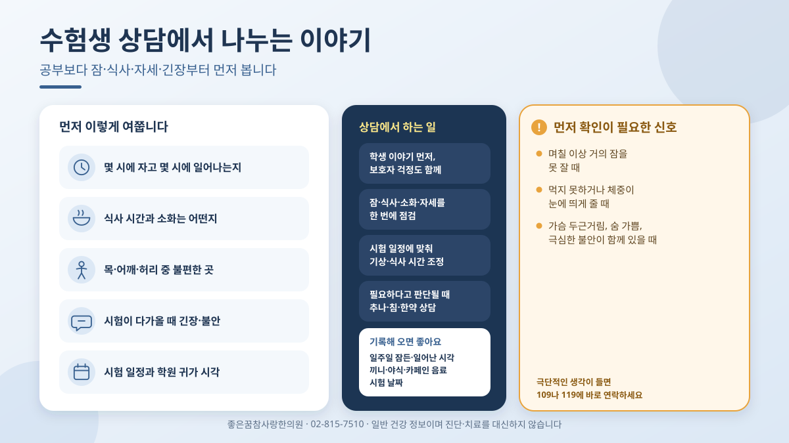

아이의 몸은 먹고, 자고, 자라는 리듬으로 움직입니다. 좋은꿈참사랑한의원은 한방소아과 진료과목에서 편식, 잦은 감기, 잠, 키 걱정, 수험생의 목·어깨 통증 같은 이야기를 아이와 보호자에게 함께 여쭙고, 아이가 무서워하지 않도록 천천히 설명하며 살핍니다.

소아·성장, 쉬운 말로 하면
아이들은 어른보다 생활 리듬의 영향을 크게 받습니다. 잘 먹지 않거나, 자주 아프거나, 늦게 자는 일이 겹치면 성장과 컨디션 걱정으로 이어지기 쉬워 증상 하나보다 하루 생활 전체를 함께 봅니다.
자주 듣는 걱정
- 밥을 조금만 먹고 편식이 심하다
- 어린이집에 다니면서 감기를 자주 앓는다
- 밤에 땀을 많이 흘리거나 자주 깬다
- 또래보다 키가 작은 것 같다
- 밤만 되면 다리가 아프다고 한다
- 학교에 다닐 나이인데 밤에 이불을 적신다
- 차만 타면 멀미를 한다
- 시험 전이면 배가 아프다고 한다
먼저 이렇게 여쭙니다
아이가 직접 말할 수 있는 나이라면 아이에게도 직접 여쭙습니다.
- 하루 식사와 간식, 먹는 양과 속도
- 잠드는 시각과 일어나는 시각, 화면을 보는 시간
- 최근 몇 달 사이 감기·장염을 앓은 횟수
- 키와 몸무게 기록(영유아 검진, 학교 기록 등)
- 복용 중인 약과 알레르기
집에서 먼저 해 볼 수 있는 것
- 잠드는 시각을 정하고 잠들기 1시간 전에는 화면 끄기
- 식사 시간을 일정하게 하고 단 음료와 간식 줄이기
- 밖에서 몸을 움직이는 시간 만들기
- 키와 몸무게를 같은 날짜에 정기적으로 재어 기록하기
- 아픈 날과 증상을 달력에 적어 두기
한의원에서 함께 살필 수 있는 경우
큰 병은 없다고 들었지만 잘 먹지 않거나 자주 아픈 일이 반복될 때, 잠과 생활 리듬을 함께 점검하고 싶을 때 소화와 잠, 몸의 온기를 함께 살핍니다.
진찰 후 필요하다고 판단될 때 아이의 나이와 상태에 맞춰 방법을 정하고, 한약은 진단과 상담을 거친 뒤에 아이의 체중과 상태를 살펴 처방합니다.
먼저 소아청소년과나 응급실이 필요한 신호
아래와 같은 경우는 소아청소년과 진료나 응급실 확인이 먼저입니다. 키 걱정은 성장 검사가 필요한지 소아청소년과에서 함께 확인해 보세요.
- 생후 3개월이 안 된 아기에게 열이 날 때
- 숨쉬기 힘들어하거나 입술이 파래질 때
- 소변이 크게 줄고 축 처져 있을 때
- 경련을 하거나 의식이 흐릴 때
- 변에 피가 섞여 나오거나 심하게 토할 때
- 키가 1년 동안 거의 자라지 않았을 때
성장과 청소년 건강
아이 키가 또래보다 작으면 부모님 마음이 급해집니다. 성장에는 유전, 영양, 수면, 사춘기 시기, 질환 등 여러 요인이 관여합니다. 한 번 잰 키보다 일정 기간 얼마나 자랐는지가 더 중요합니다.
한의원에서는 진맥과 함께 아이의 식사, 수면, 활동량, 소화 상태를 살피고 아이에게 맞는 생활 관리를 함께 찾습니다. 특정 키 성장을 약속하지 않습니다. 성장이 지나치게 느리거나 사춘기가 너무 이르거나 늦으면 소아청소년과 진료를 권해 드립니다.
오래 앉아 공부하는 중고생은 목·어깨·허리가 뻐근하고 잠이 흔들리기 쉽습니다. 공부 자세와 잠드는 시각, 카페인을 함께 여쭙고 통증과 잠을 같이 살핍니다.
성장 기록, 이렇게 남겨 두세요
키는 하루 중에도 조금씩 달라질 수 있어 같은 시각에 같은 방법으로 재야 기록끼리 비교하기 쉽습니다. 1년 동안 자란 키를 알면 한의원에서도, 소아청소년과에서도 상담이 구체적이 됩니다.
- 아침에 맨발로 벽에 등을 대고 같은 방법으로 재기
- 석 달에 한 번 날짜와 함께 키와 몸무게 적어 두기
- 영유아 검진, 학교 건강검사 결과를 한곳에 모아 두기
- 부모의 키와 사춘기가 시작된 시기도 함께 기억해 두기
좋은꿈참사랑한의원 진료는 이렇게 진행됩니다
보호자와 함께 접수한 뒤 상담에서 아이의 생활을 먼저 듣습니다. 아이가 무서워하지 않도록 무엇을 할지 먼저 보여 주고 설명합니다. 다시 오시면 지난번 이야기부터 이어서 여쭙습니다.
상도동·노량진에서
이종호 대표원장은 프로필에 은로초등학교·중대부중학교 학교 한의사로 소개되어 있습니다. 좋은꿈참사랑한의원은 상도역 3번 출구에서 걸어서 올 수 있는 곳(서울 동작구 만양로2길 2 신성빌딩 3층·5층 (상도동))에 있고, 토·일·공휴일에도 오후 3시까지 진료해 학교와 학원 일정이 빠듯한 아이들도 주말에 들를 수 있습니다.
자주 묻는 질문
아이도 한의원 진료를 받을 수 있나요?
네, 한방소아과 진료과목에서 진료합니다. 아이의 나이와 상태를 먼저 여쭙고, 아이가 무서워하지 않도록 천천히 설명하며 진행합니다.
아이 키가 작아서 걱정인데 무엇부터 해야 하나요?
그동안의 키와 몸무게 기록을 모아 보세요. 자라는 속도가 느리면 소아청소년과에서 성장 검사가 필요한지 먼저 확인하고, 한의원에서는 식사와 잠, 생활 리듬을 함께 살핍니다.
성장 한약을 먹으면 키가 크나요?
키 성장을 보장할 수는 없습니다. 아이의 소화, 수면, 영양 상태를 살펴 건강하게 자라도록 돕는 방향으로 진료합니다.
편식이 심하고 밥을 조금 먹는 아이는 무엇을 보나요?
먹는 양과 속도, 간식, 배변, 잠을 함께 여쭙습니다. 체중이 줄거나 자주 토하면 소아청소년과 확인을 먼저 권합니다.
어린이집에 다니면서 감기를 달고 사는데 상담할 수 있나요?
감기를 앓은 횟수와 기간, 잠과 식사를 함께 살핍니다. 고열이나 숨이 차는 증상이 있으면 소아청소년과 진료가 먼저입니다.
아이에게 한약을 먹여도 되나요?
한약은 진단과 상담을 거친 뒤에 아이의 나이와 체중, 상태를 살펴 처방합니다. 복용 중인 약과 알레르기는 꼭 알려 주세요.
밤에 이불에 실수하는 초등학생도 상담하나요?
네. 저녁 수분 섭취, 잠의 깊이, 낮의 배뇨 습관을 함께 여쭙습니다. 낮에도 실수가 잦거나 소변 볼 때 아파하면 소아청소년과나 비뇨의학과 확인을 먼저 권합니다.
시험 때마다 배가 아프다는 중고생은 어떻게 하나요?
배가 아픈 때와 식사, 잠, 공부 일정을 함께 살핍니다. 체중이 줄거나 밤에 아파서 깨면 소아청소년과나 내과 진료를 먼저 받으세요.
수험생 목·어깨 통증도 보나요?
네. 오래 앉아 공부하는 학생의 목·어깨·허리 통증과 수면 문제를 함께 살핍니다.
아이와 함께 갈 때 무엇을 챙기면 되나요?
영유아 검진 기록이나 키·몸무게 기록, 복용 중인 약, 증상을 적은 메모를 챙겨 오시면 상담이 수월합니다.
감수: 좋은꿈참사랑한의원 대표원장 이종호 · 마지막 확인 2026-11-26 · 일반적인 건강 정보이며 진단·치료를 대신하지 않습니다.
소아·성장 글 모아 보기 (18편)

아이가 눈썰매나 스케이트를 타다 넘어져 손목을 아파하면 무엇부터 확인하나요?
아이가 넘어지며 손을 짚은 뒤 손목을 아파하면 뼈를 다쳤는지 확인하는 것이 먼저라, 붓기와 손을 쓰는 모습을 보고 영상 검사가 가능한 의료기관에서 확인한 뒤 남은 불편을 살핍니다.
수정 2026-11-25
중고등학생 아이가 아침을 거르고 등교할 때는 어떻게 살피나요?
중고등학생 아이가 아침을 거르고 등교한다면 들고 갈 수 있는 간단한 아침을 준비하고, 전날 야식은 잠들기 2시간 전에 마치며 일어나서 따뜻한 물 한 컵부터 마시게 하는 것으로 시작해 보시기를 권합니다.
수정 2026-11-24

성장기 아이가 갑자기 많이 먹고 늘 배고프다고 할 때는 무엇을 살피나요?
성장기 아이가 갑자기 많이 먹고 늘 배고프다고 하면 학원 가기 전 든든한 간식, 밤에는 가벼운 것, 식사 때 단백질과 채소를 고르게 챙기는 것부터 하고, 많이 먹는데 체중이 줄면 먼저 검사가 필요합니다.
수정 2026-11-24

무거운 책가방을 메고 언덕길로 등하교하는 아이가 어깨와 허리가 아프다고 할 때는 어떻게 살피나요?
무거운 책가방을 한쪽 어깨로 메거나 낮게 늘어뜨린 채 언덕을 오르면 아이의 어깨와 허리에 부담이 갈 수 있어, 가방 무게와 메는 방식, 아픈 시간과 위치를 먼저 묻고 가방을 가볍게 하는 방법을 함께 정리합니다.
수정 2026-11-24

아이가 자면서 코를 골고 입으로 숨 쉴 때는 어떻게 살피나요?
아이가 자면서 코를 골고 입으로 숨 쉬며 숨이 멎는 듯한 모습이 있으면 편도와 아데노이드, 비염과 관련될 수 있어 소아청소년과나 이비인후과 진료를 먼저 권하고 한의원에서는 수면과 성장, 코막힘과 생활을 함께 살핍니다.
수정 2026-11-26

학원이 늦게 끝나 밤 9시 넘어 저녁을 먹는 아이의 소화와 잠은 어떻게 살피나요?
학원 일정 때문에 저녁을 늦게 먹고 바로 숙제하고 자는 생활이 이어지면 아이의 속이 더부룩하고 잠드는 시간이 늦어질 수 있어, 하루 식사 시간과 간식, 잠드는 시간을 먼저 묻고 학원 일정 안에서 바꿀 수 있는 방법을 함께 정리합니다.
수정 2026-11-24

키 걱정에 아이를 일찍 재우려는데 잠자리에서 계속 버틸 때는 어떻게 살피나요?
아이를 일찍 재우려 해도 잠들지 못한다면 잠드는 시각을 며칠마다 15분씩 앞당기고, 아침 기상 시각을 먼저 고정하며 잠들기 1시간 전 화면 끄기와 같은 순서를 반복하는 것부터 시작하시기를 권합니다.
수정 2026-11-24

가을 환절기에 아이가 등굣길마다 코가 막히고 훌쩍일 때는 어떻게 살피나요?
가을 환절기에는 아침저녁 기온 차가 커서 등굣길 찬 공기에 아이가 코를 훌쩍이고 막혀 하는 경우가 있습니다. 증상이 심한 시간대와 옷차림, 교실 환경, 밤잠을 먼저 여쭙고 등교 아침 습관을 함께 점검합니다.
수정 2026-11-25

시험 기간만 되면 배가 아프다는 중고등학생은 어떻게 살피나요?
시험 기간에 반복되는 복통과 설사, 더부룩함은 긴장, 잠 부족, 불규칙한 식사와 함께 나타나는 경우가 있어 증상이 생기는 시기와 식사, 잠을 먼저 묻고 확인이 필요한 신호를 함께 안내합니다.
수정 2026-11-24

학생이 방학에 진료를 받을 때는 시간을 어떻게 정하면 되나요?
방학 중에는 늦잠과 학원 일정 때문에 하루 리듬이 흐트러지기 쉬워, 아이의 하루 일정과 보호자 일정을 함께 정리한 뒤 오전이나 오후 중 규칙적인 시간을 고르시면 진료를 이어가기 수월합니다.
수정 2026-11-25

수험생 상담에서는 어떤 이야기를 나누나요?
수험생 상담에서는 잠, 식사, 소화, 목·허리 자세, 시험 앞의 긴장을 학생 본인과 보호자에게 묻고, 시험 일정에 맞춰 일어나는 시각과 식사 시간 같은 생활 리듬을 함께 점검합니다.
수정 2026-11-24

아이가 휴대폰을 보다가 밤늦게 잠들 때는 어떻게 바꿔 갈 수 있을까요?
잠들기 전 휴대폰과 태블릿 사용은 잠드는 시간을 늦출 수 있어, 화면을 보는 시간과 장소, 잠드는 시간, 아침 기상을 먼저 묻고 가족이 함께 지킬 수 있는 규칙을 정리합니다.
수정 2026-11-24

아이가 밥을 몇 숟가락 먹고 안 먹으려 할 때는 무엇을 먼저 살피나요?
아이가 밥을 조금만 먹고 거부할 때는 간식 시간과 양, 식사 분위기, 활동량, 잠과 변 상태를 먼저 묻고 성장 곡선과 함께 살핍니다.
수정 2026-11-24

아이가 자면서 땀을 흠뻑 흘릴 때는 무엇을 먼저 살피나요?
아이가 잠들고 1~2시간 사이에 땀을 많이 흘리는 일은 흔하지만, 침실 온도와 이불, 잠자기 전 활동, 코골이 여부를 먼저 묻고 열이나 체중 변화가 있으면 소아청소년과 진료를 안내합니다.
수정 2026-11-24

아이가 차만 타면 멀미를 할 때는 어떻게 준비하면 좋을까요?
차멀미가 잦은 아이는 앉는 자리와 시선, 출발 전 식사, 차 안 공기를 먼저 살피고, 이동 전에 미리 준비할 수 있는 방법을 함께 정리합니다.
수정 2026-11-24

아이가 밤마다 다리가 아프다고 할 때는 무엇을 먼저 살피나요?
아이가 저녁이나 밤에 양쪽 다리가 아프다고 하는 경우 활동량과 아픈 위치, 낮의 모습을 먼저 묻고, 한쪽만 붓거나 절뚝거리면 바로 진료를 받도록 안내합니다.
수정 2026-11-24
어린이집에 다니면서 감기를 달고 사는 아이는 어떻게 살피나요?
어린이집에 다니기 시작한 아이가 감기에 자주 걸리는 일은 흔히 겪는 과정이지만, 걸리는 간격과 회복 기간, 잠과 식사, 변 상태를 함께 기록하고 살피며 열이 오래가면 소아청소년과 진료를 안내합니다.
수정 2026-11-24

초등학생이 되었는데 아직 밤에 이불에 실수할 때는 어떻게 살피나요?
초등학생의 야뇨는 아이마다 나아지는 시기가 다르고 꾸중보다 기록과 생활 조정이 중요해, 저녁 물 섭취와 잠드는 시간, 변비, 낮 소변 습관을 먼저 묻고 함께 살핍니다.
수정 2026-11-24